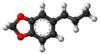

isosafrole

Definition: Isosafrole is an organic compound that is used in the fragrance industry. Structurally, the molecule is related to phenylpropene, a type of aromatic organic chemical. Its fragrance is reminiscent of anise or licorice. It is found in small amounts in various essential oils, but is most commonly obtained by isomerizing the plant oil safrole. It exists as two geometric isomers, cis-isosafrole and trans-isosafrole.
Source: Wikipedia
Wikipedia Page
Wikidata Page